2
→
▶
2
→
▶
「アベンジャーズ／ドゥームズデイ」本予告編｜12月18日(金)劇場公開｜MARVEL(マーベル)
マーベル公式 · 2,634,565再生 · 公開 11/24
2
→
▶
マーベル公式 · 2,634,565再生 · 公開 11/24
 3
→
▶
3
→
▶
らっだぁ · 381,356再生 · 公開 11/25
 4
▲3
▶
4
▲3
▶
spitzclips · 193,232再生 · 公開 11/25
 5
→
▶
5
→
▶
東宝MOVIEチャンネル · 338,704再生 · 公開 11/25
 6
▲6
▶
6
▲6
▶
ドズル社 · 229,836再生 · 公開 11/25
 8
▲3
▶
8
▲3
▶
GAOU CINEMATIC STUDIOS【アメコミ映画最新情報紹介チャンネル】 · 42,955再生 · 公開 11/25
 9
初登場
▶
9
初登場
▶
イブラヒム【にじさんじ】 · 317,764再生 · 公開 11/25
 11
▼3
▶
11
▼3
▶
Japan Sci-Fi 【SF解説・創作】 · 129,732再生 · 公開 11/24
 12
▼6
▶
12
▼6
▶
ちろぴの · 332,505再生 · 公開 11/25
 14
初登場
▶
14
初登場
▶
パズドラ公式チャンネル · 208,251再生 · 公開 11/25
 16
▼7
▶
16
▼7
▶
めめんともり · 169,349再生 · 公開 11/25
 18
▲13
▶
18
▲13
▶
のばまんゲームス · 130,196再生 · 公開 11/25
 20
▼1
▶
20
▼1
▶
ブラックナイト山田 · 258,100再生 · 公開 11/25
 22
▲7
▶
22
▲7
▶
ハヤトの野望 · 173,943再生 · 公開 11/25
 24
初登場
▶
24
初登場
▶
もこうの実況 · 121,599再生 · 公開 11/25
 26
初登場
▶
26
初登場
▶
Miko Ch. さくらみこ · 511,554再生 · 公開 11/26
 27
▲9
▶
27
▲9
▶
histandardofficial · 93,709再生 · 公開 11/25
 28
▼13
▶
28
▼13
▶
くろこのビクトリーロード · 236,732再生 · 公開 11/25
 30
初登場
▶
30
初登場
▶
SHAKAch · 203,623再生 · 公開 11/25
 32
▲7
▶
32
▲7
▶
【V.I.P】 · 151,910再生 · 公開 11/25
 34
▲3
▶
34
▲3
▶
プレイヤーキル大好きプレイヤー · 192,414再生 · 公開 11/25
 36
▼13
▶
36
▼13
▶
ゼンレスゾーンゼロ-ZZZ-公式 · 336,416再生 · 公開 11/25
 37
初登場
▶
37
初登場
▶
Lantis Channel · 20,077再生 · 公開 11/25
 38
初登場
▶
38
初登場
▶
昏昏アリア / Konkon Aria · 341,561再生 · 公開 11/26
 39
初登場
▶
39
初登場
▶
indigo la End · 28,840再生 · 公開 11/25
 40
初登場
▶
40
初登場
▶
剣持刀也 · 201,600再生 · 公開 11/26
 41
▼1
▶
41
▼1
▶
矢沢永吉 Eikichi Yazawa Channel · 85,738再生 · 公開 11/25
 42
初登場
▶
42
初登場
▶
よしなま · 81,251再生 · 公開 11/25
 44
▲5
▶
44
▲5
▶
ゆきお · 153,868再生 · 公開 11/25
 45
初登場
▶
45
初登場
▶
中島美嘉 Official YouTube Channel · 54,039再生 · 公開 11/25
 46
初登場
▶
46
初登場
▶
Koyori ch. 博衣こより - holoX - · 429,568再生 · 公開 11/26
 47
▼15
▶
47
▼15
▶
NOT EQUAL ME ノットイコールミー 公式チャンネル · 160,528再生 · 公開 11/24
 48
初登場
▶
48
初登場
▶
Pekora Ch. 兎田ぺこら · 353,934再生 · 公開 11/25
 50
初登場
▶
50
初登場
▶
プロジェクトセカイ カラフルステージ! feat. 初音ミク · 270,895再生 · 公開 11/25
 1
→
▶
1
→
▶
timelesz [タイムレス] · 486,800再生 · 公開 11/25
 7
▼3
▶
7
▼3
▶
Stray Kids Japan Official YouTube · 2,543,083再生 · 公開 11/25
 10
初登場
▶
10
初登場
▶
Tele · 54,182再生 · 公開 11/25
 13
初登場
▶
13
初登場
▶
町田ちま【にじさんじ】 · 184,024再生 · 公開 11/25
 15
初登場
▶
15
初登場
▶
RADWIMPS · 120,570再生 · 公開 11/25
 17
▲1
▶
17
▲1
▶
Meychan · 78,223再生 · 公開 11/25
 19
▼9
▶
19
▼9
▶
Mrs. GREEN APPLE · 4,289,078再生 · 公開 11/23
 21
▲1
▶
21
▲1
▶
乃木坂46 OFFICIAL YouTube CHANNEL · 250,522再生 · 公開 11/25
 23
▼10
▶
23
▼10
▶
NEARLY EQUAL JOY ニアリーイコールジョイ 公式チャンネル · 203,573再生 · 公開 11/24
 25
▼9
▶
25
▼9
▶
竹内まりや - Mariya Takeuchi Official YouTube Channel · 118,603再生 · 公開 11/25
 29
▲5
▶
29
▲5
▶
izna (이즈나) · 584,082再生 · 公開 11/25
 31
初登場
▶
31
初登場
▶
Hikaru Utada · 238,945再生 · 公開 11/25
 33
▲9
▶
33
▲9
▶
一条ゆう · 142,223再生 · 公開 11/25
 35
▼9
▶
35
▼9
▶
PUPPET SUNSUN - Topic · 92,508再生 · 公開 11/24
 43
初登場
▶
43
初登場
▶
モナキ · 45,727再生 · 公開 11/25
 49
▼21
▶
49
▼21
▶
Stray Kids - Topic · 19,696再生 · 公開 11/25
 4100万回
4100万回
Infoseek · 24 Nov
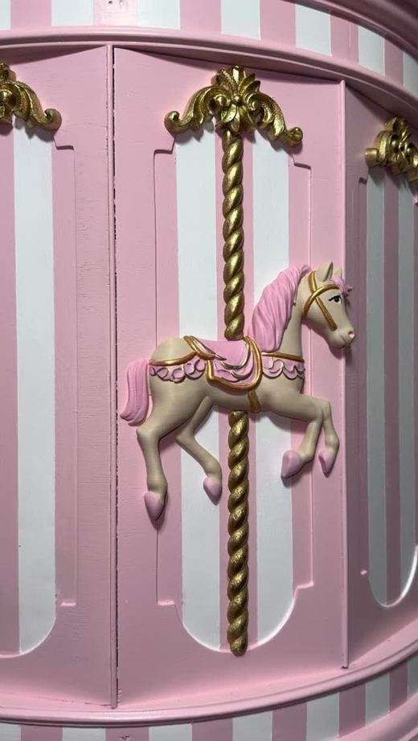
1000万回 NEWニコニコニュース · 25 Nov · @melmadefurniture ♥571,822
山陽新聞 · 25 Nov
 820万回
820万回
Yahoo!ニュース · 24 Nov · @iamsimplytiffany ♥773,414
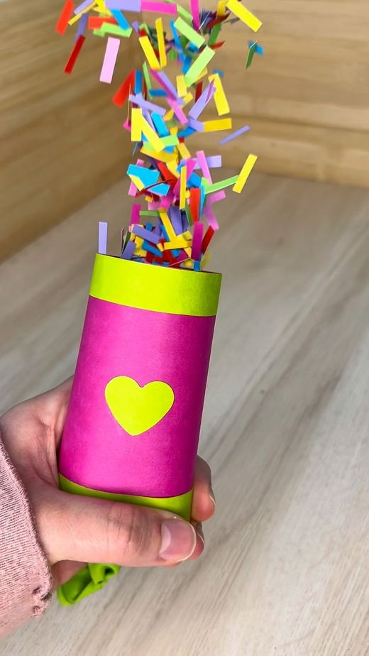
496万回 NEWねとらぼ · 24 Nov · @hazelscraftt ♥60,349
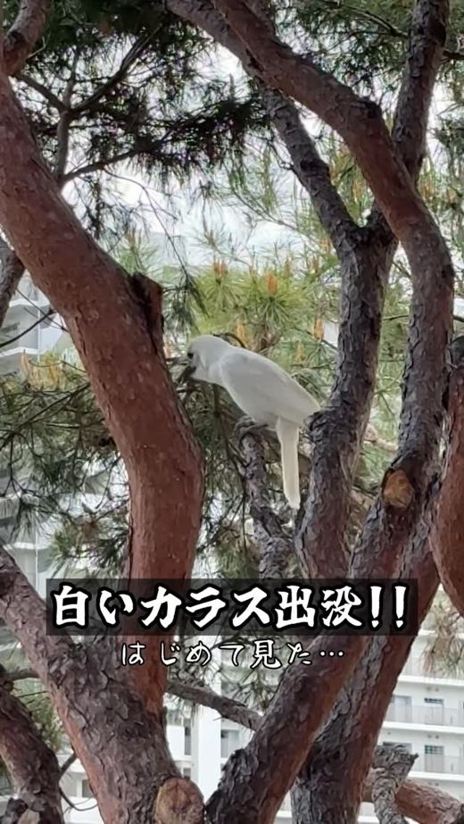
260万回Yahoo!ニュース · 24 Nov · @kohei_life_travel ♥138,869
 260万回
NEW
260万回
NEW
Yahoo!ニュース · 25 Nov · @rion7849 ♥120,982
 154万回
NEW
154万回
NEW
ライブドアニュース · 25 Nov
 108万回
NEW
108万回
NEW
ねとらぼ · 24 Nov · @tonon_kurashi ♥16,871
 100万回
NEW
100万回
NEW
Excite エキサイト · 25 Nov
 89万回
NEW
89万回
NEW
Excite エキサイト · 25 Nov
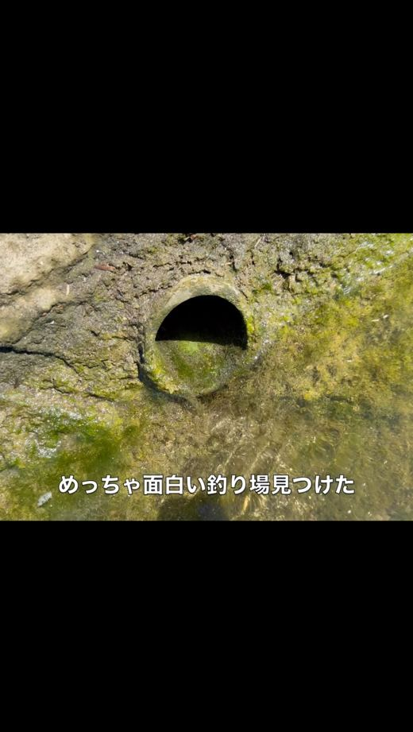
80万回Yahoo!ニュース · 24 Nov · @takuwannofishinglife ♥4,448
 80万回
NEW
80万回
NEW
ねとらぼ · 24 Nov · @takuwannofishinglife ♥4,448
 70万回
NEW
70万回
NEW
Excite エキサイト · 24 Nov
 70万回
NEW
70万回
NEW
ライブドアニュース · 25 Nov
 108万回
NEW
108万回
NEW
ねとらぼ · 24 Nov · @tonon_kurashi ♥16,871
ｄメニューニュース · 25 Nov
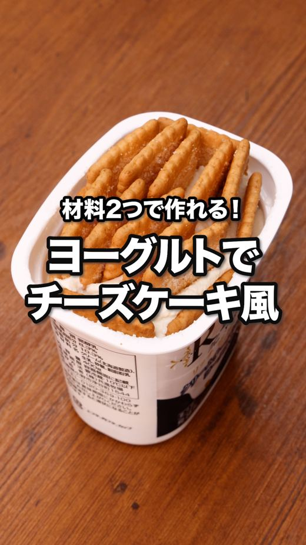
NEWニコニコニュース · 25 Nov · @delishkitchen.tv ♥127,758
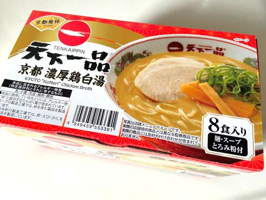
NEWYahoo!ニュース · 25 Nov
Yahoo!ニュース · 25 Nov · @doiwashoku_app ♥1,271
LIMO | くらしとお金の経済メディア · 25 Nov
LEE · 25 Nov
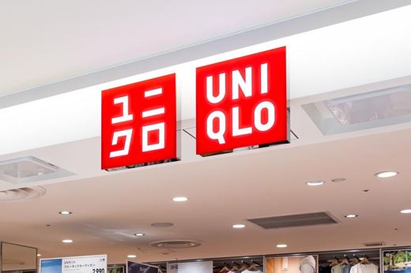
NEWオトナンサー · 25 Nov
美的 · 25 Nov
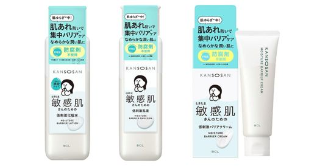
NEWMAQUIA · 25 Nov
MAQUIA · 25 Nov
ｄメニューニュース · 25 Nov
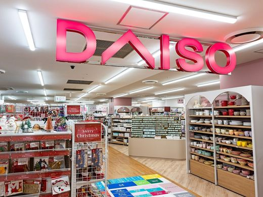
NEWライブドアニュース · 25 Nov
ｄメニューニュース · 25 Nov
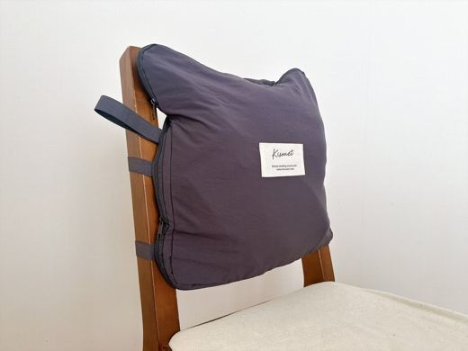
NEWマイナビニュース · 25 Nov
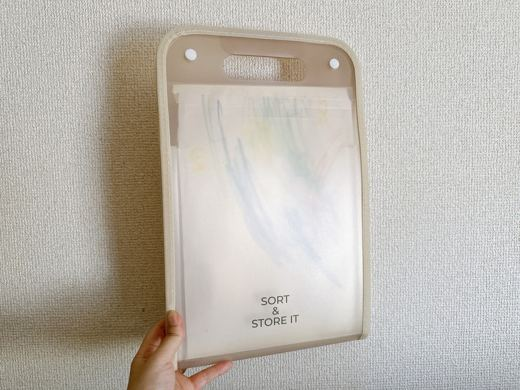
NEWInfoseek · 25 Nov
MonoMax web · 25 Nov
株式会社主婦と生活社のプレスリリース 「クックパッド食トレンド大賞2026『今年の顔』」を2年連続で受賞した料理家・長谷川あかり
株式会社Cake.jpのプレスリリース ケーキ・スイーツ専門通販サイト「Cake.jp（ケーキジェーピー）」を運営する株式会社C
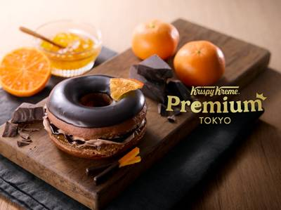
11/25 14:00 🗼 東京クリスピー・クリーム・ドーナツ・ジャパン株式会社のプレスリリース 2026年12月8日(火)より期間限定販売 クリスピー・クリ
株式会社オールアバウトライフマーケティングのプレスリリース ～試す価値を再定義する。デジタル×リアルのハイブリッド体験を提供～
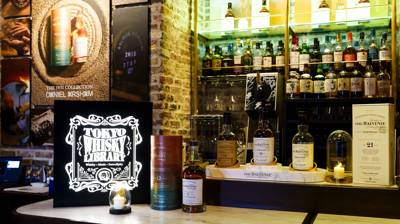
11/25 13:10 🗼 表参道ブラウンフォーマンジャパン株式会社のプレスリリース 新製品を含む3種の飲み比べフライトや、旬のいちごを使ったオリジナルカクテルも
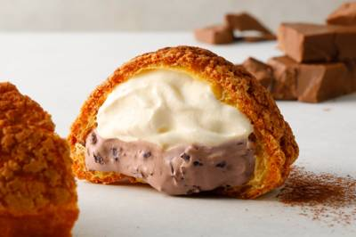
11/25 12:10 🗼 東京株式会社シュクレイのプレスリリース シュー生地のサクサク食感と、二層仕立てクリームの至福の味わい。 東京ミルクチーズ工場：チーズ
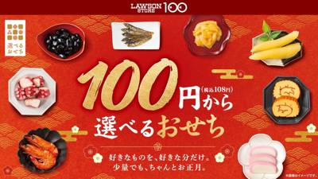
11/25 12:00 🗼 東京株式会社ローソンストア１００のプレスリリース 累計販売数2,000万食突破の大ヒット商品が今年も登場 株式会社ローソンストア1
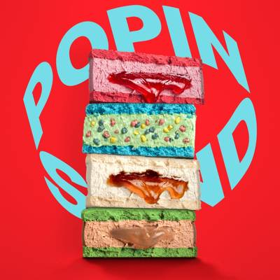
11/25 12:00 🗼 横浜横浜バニラ株式会社のプレスリリース 12月5日(土)・6日(日)に東京駅のグランスタ東京「スクエア ゼロ」にて先行販売！ ギフト
松竹株式会社のプレスリリース 歌舞伎をモチーフとした、ディズニー／歌舞伎かたぬきバウムが2026年12月2日（水）より松竹歌舞伎
株式会社グレープストーンのプレスリリース 2026年12月1日(火)～期間限定発売 株式会社グレープストーン(本社：東京都中央区
株式会社オレンジページのプレスリリース 株式会社オレンジページ（東京都港区）は、ライフスタイルメディア「フーディストノート」とコ
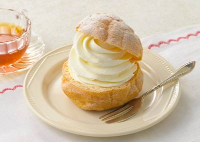
11/25 10:00 🗼 銀座株式会社銀座コージーコーナーのプレスリリース 11月27日（金）～30日（月）の限定販売 株式会社銀座コージーコーナー＜代表取締
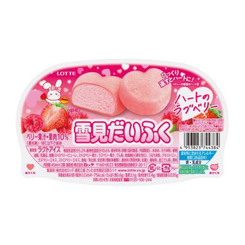
11/25 10:00 🗼 東京株式会社ロッテのプレスリリース 12月7日（月）全国で発売 株式会社ロッテ（東京都新宿区、代表取締役社長執行役員：中島英樹、以下
株式会社グレープストーンのプレスリリース 株式会社グレープストーン(本社：東京都中央区銀座)が展開する「東京ばな奈ワールド」とC
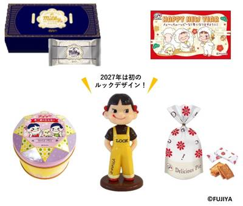
11/25 10:00 🗼 銀座株式会社不二家のプレスリリース ■新年のお祝いに！ ペコちゃん人形と人気のお菓子が楽しめるお得な福袋 不二家の歴史と伝統を踏襲し
株式会社宝仙堂のプレスリリース 見た目より中身、広く浅くではなく、狭く深く、本物へのこだわり。すっぽん抽出エキス「トリオリンEP
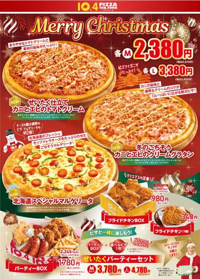
11/25 17:04 ❓ 不明株式会社テンフォーのプレスリリース 〜さらに『北海道チーズドリア 天使のオーブン』の新作ドリア＆『第104代肉横綱』のボリューム
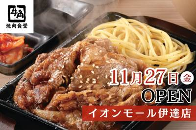
11/25 16:00 🚄 福島株式会社レインズインターナショナルのプレスリリース ～お腹も心も満たす、アツアツ鉄板焼肉と焼肉丼～ コロワイドグループの株式会
株式会社榮太樓總本鋪のプレスリリース サプリの代わりに美味しく摂れる！和菓子屋が作るグルコサミン入りようかん。 株式会社榮太樓總
株式会社アップライジングのプレスリリース 響21年は3口、響 JAPANESE HARMONYは10口！1口6,980円（税込・
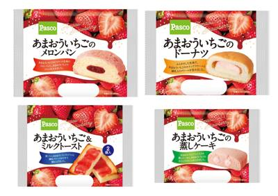
11/25 15:00 ❓ 不明敷島製パン株式会社のプレスリリース 敷島製パン株式会社（Pasco）は、「あまおういちごのメロンパン」「あまおういちごのドーナツ
株式会社メリーチョコレートカムパニーのプレスリリース ～「ウルトラマン缶／ダダ缶」12月23日（水）より予約開始～ チョコレート
対象のおにぎりまたはサンドイッチいずれか１個を一緒に買うと対象ドリンク１本無料レシートクーポンもらえる！※1 レシート発券期間：
濃厚で芳醇な味わいを楽しめる冬季限定メニュー4種 京都宇治の老舗「辻利（TSUJIRI）」では、辻利 京都祇園店、京都タワーサン
サントリービバレッジ＆フード株式会社のプレスリリース 飲む方のおいしさと、支える方の使いやすさの両立を目指して サントリービバレ
株式会社シュクレイのプレスリリース ピーナッツスイーツ専門店【ドレ】がお届けする、冬だけのサンデー。 Doré：ドレ・チョコレー
株式会社メリーチョコレートカムパニーのプレスリリース ～「ムーミン × メリーチョコレート」12月23日（水）より予約開始～ チ
アサヒビール株式会社のプレスリリース アサヒビール株式会社（本社 東京、社長 松山一雄）は、『アサヒスーパードライ』『アサヒス
株式会社モンテールのプレスリリース 新たにカカオマスで仕立てた生チョコを使用し、さらに香り高く～2026年12月1日(火)から期
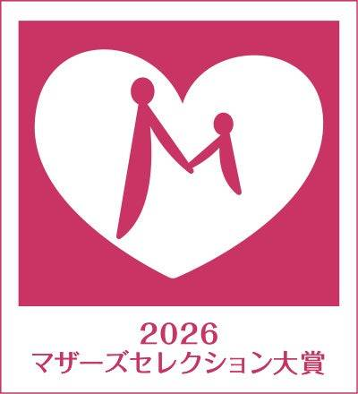
11/25 14:00 ❓ 不明アサヒグループ食品株式会社のプレスリリース アサヒグループ食品株式会社（本社 東京、社長 川原浩）が販売するサプリメント「ディ
タリーズコーヒージャパン株式会社のプレスリリース タリーズコーヒージャパン株式会社（本社：東京都新宿区、代表取締役社長：内山修二
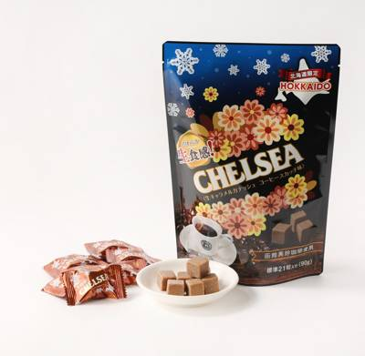
11/25 14:00 🚄 北海道―函館創業の老舗「函館美鈴珈琲」のコーヒー豆を使用した香ばしい味わい― 道南食品株式会社(代表取締役社長：和田 朝寛)は、「北海
泉万醸造株式会社のプレスリリース ① 茨城県産「べにはるか」の焼き芋ペースト ②北海道産大豆ペースト ③原材料は国産素材5種と水
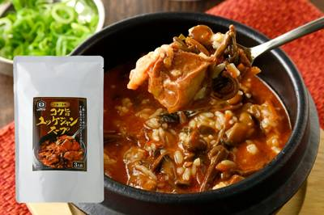
11/25 13:31 ❓ 不明泉万醸造株式会社のプレスリリース ①牛バラ肉と4種の野菜②牛骨スープのコク③自家製コチジャンと韓国産唐辛子④隠し味の醸造品 19
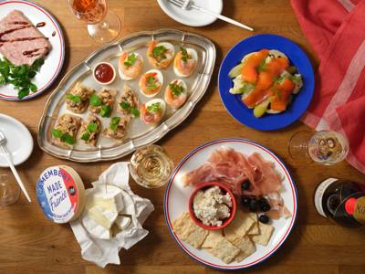
11/25 13:00 ❓ 不明株式会社成城石井のプレスリリース 〜フランスの豊かな食の楽しみ方から学ぶ、会話が弾む食卓提案〜 株式会社成城石井（本社事務所：神
株式会社ブルボンのプレスリリース ～ 神戸学院大学らとの産学官連携で商品化 ～ 株式会社ブルボン(本社：新潟県柏崎市、代表取締役
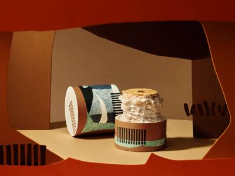
11/25 13:00 🚄 関西北海道コンフェクトグループ株式会社のプレスリリース 今シーズン、関西エリアでは髙島屋大阪店だけの限定販売3商品が登場 冬の放牧牛
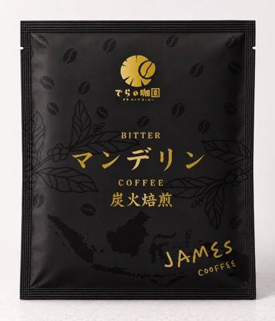
11/25 12:11 ❓ 不明株式会社たかやまのプレスリリース 炭事業から始まったコーヒーブランド「でら珈園（DERA PARK COFFEE）」が、 インド
株式会社九十九島グループのプレスリリース 12月1日より販売開始。2027年の干支“未(ひつじ)”と、“新春”のりんがけを刷った
第一屋製パン株式会社のプレスリリース 第一屋製パン株式会社（本社：東京都小平市、代表取締役社長：細貝 正統）は、一般財団法人ポ
エースコック株式会社のプレスリリース 当たればうれしい懸賞付きカップめん！年末にふさわしい縁起の良い素材を使用した2品が新登場！
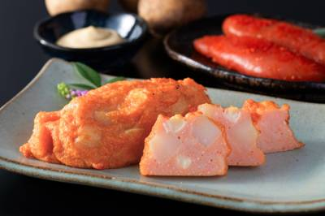
11/25 12:00 🚄 三重株式会社まる天のプレスリリース 株式会社まる天は2026年12月1日(火)より、冬季限定商品『明太マヨ天』を発売。ピリ辛の明太子
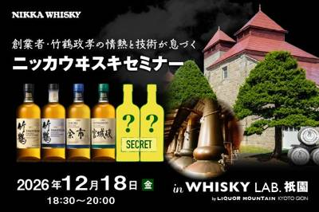
11/25 12:00 🚄 京都株式会社リカーマウンテンのプレスリリース 数量限定リリース「竹鶴ピュアモルト エッセンシャルズ 2026」など豪華テイスティング
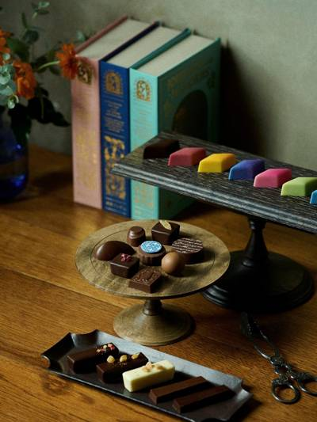
11/25 11:30 🚄 兵庫モロゾフ株式会社のプレスリリース 1932年、日本で初めてバレンタインにチョコレートを贈るスタイルを紹介したモロゾフ株式会社（兵
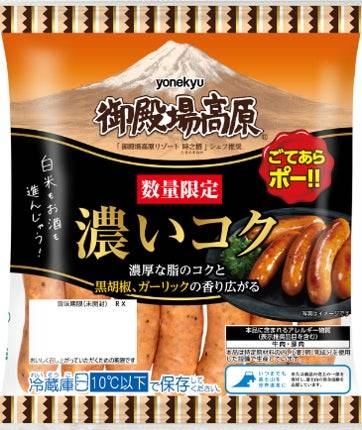
11/25 11:30 🚄 静岡伊藤ハム米久ホールディングス株式会社のプレスリリース ～冬にぴったり！白米もお酒も進む「濃いコク」～ 米久株式会社(静岡県沼津市
株式会社ホイッスル三好のプレスリリース 鶏スープと特製塩ダレに磯の香りが溶け合う一杯。“追い牡蠣”で最大11個まで増量可能、牡蠣
株式会社グレープストーンのプレスリリース 2026年12月1日(火)から販売開始！ 株式会社グレープストーン(本社：東京都中央区
ほっともっとのプレスリリース 株式会社プレナスは、持ち帰り弁当の「Hotto Motto (ほっともっと)」を、2026年10月
レッドホースコーポレーション株式会社のプレスリリース 地域活性化起業人が県内事業者をつなぎ 官民連携のもと商品化 地域創生を基幹
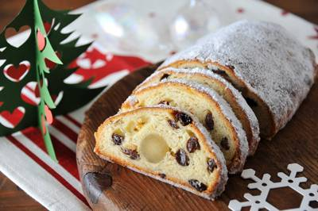
11/25 11:00 🚄 広島株式会社アンデルセン・パン生活文化研究所のプレスリリース しっとりと芳醇な香りを漂わせるシュトレン。時間の経過とともに風味が深ま
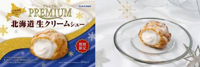
11/25 11:00 🚄 北海道株式会社DAY TO LIFEのプレスリリース 株式会社DAY TO LIFE（本社：大阪府大阪市北区、代表取締役：杉内健吉）が
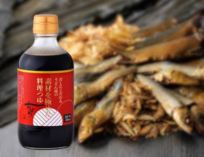
11/25 11:00 🚄 兵庫株式会社ちからのプレスリリース 広島で91年続くうどん店「ちから」を営む株式会社ちから(本社：広島市中区、代表取締役社長：小林
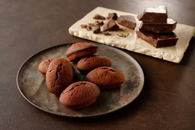
11/25 11:00 🌐 全国株式会社庫やのプレスリリース 全国のチーズガーデンおよびオンラインショップにて コロワイドグループのチーズガーデン（株式会社庫
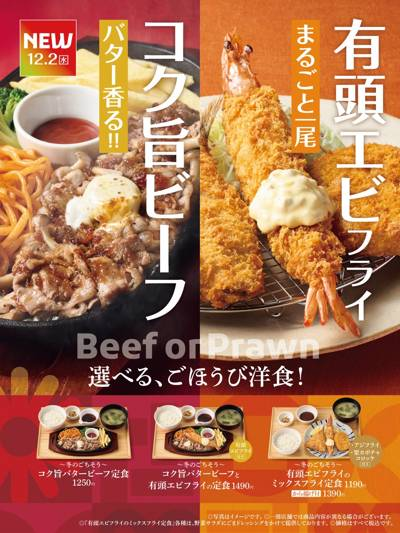
11/25 11:00 ❓ 不明株式会社プレナスのプレスリリース 12月2日(水)より新発売 株式会社プレナスは、定食レストラン「やよい軒」を、日本国内にて2
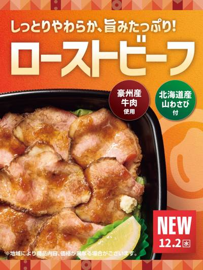
11/25 11:00 ❓ 不明株式会社プレナスのプレスリリース 12.2(水)より新発売 株式会社プレナスは、持ち帰り弁当の「Hotto Motto (ほっと
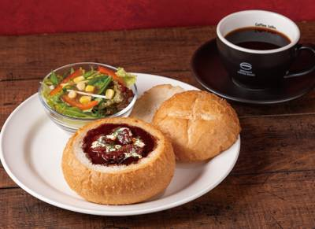
11/25 11:00 🌐 全国C-United株式会社のプレスリリース コロワイドグループのC-United株式会社（本社：東京都港区、代表取締役社長：友成
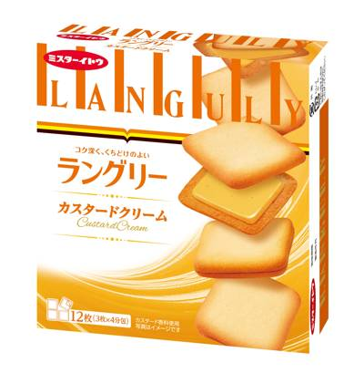
11/25 11:00 🚄 岐阜イトウ製菓株式会社のプレスリリース 2026年9月7日（月）より全国で販売開始 イトウ製菓株式会社（本社：東京都北区、代表取締
タリーズコーヒージャパン株式会社のプレスリリース タリーズコーヒージャパン株式会社（本社：東京都新宿区、代表取締役社長：内山修二
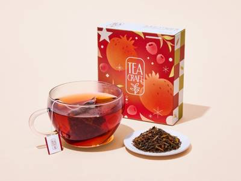
11/25 11:00 ❓ 不明株式会社ゴンチャ ジャパンのプレスリリース 株式会社ゴンチャ ジャパン（本社：東京都港区、代表取締役社長：角田淳、以下ゴンチャ
株式会社一蘭のプレスリリース 株式会社一蘭は、年末年始のひとときを彩る「一蘭福袋2027」を2026年11月25日（水）より、お
株式会社ドトールコーヒーのプレスリリース 株式会社ドトールコーヒー（本社：東京都渋谷区／代表取締役社長：星野 正則）は、当社公式
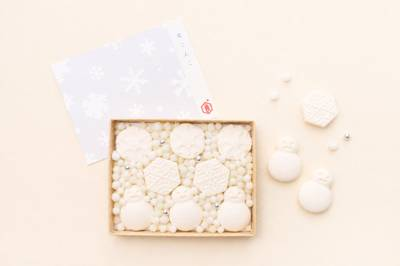
11/25 10:31 ❓ 不明亀屋良長株式会社のプレスリリース 寒さを愛でる冬のひと箱。雪だるまと雪の結晶が描く小さな雪景色は、雪のようにほどけるやさしい口ど
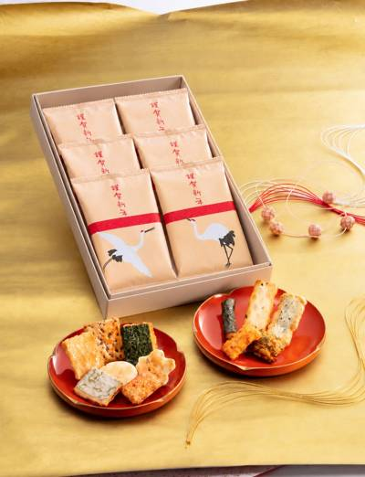
11/25 10:30 🚄 山形株式会社東あられ本鋪のプレスリリース 山形県中山町の契約農家のもち米でつくる「おかき両国」「東一福」を、新年のご挨拶にふさわしい
株式会社ゼンショーホールディングスのプレスリリース 株式会社オリーブの丘（代表取締役社長：藤田 和也 本社：東京都港区）が展開
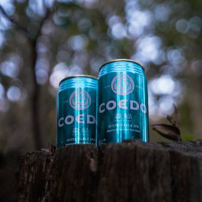
11/25 10:10 🌐 全国株式会社協同商事 コエドブルワリーのプレスリリース 全国のローソンにて数量限定発売 2026年12月15日より コエドブルワリー
株式会社富士達のプレスリリース 〜新メニュー登場＆ライス値下げ！さらに3日間限定で対象3品が各290円（税込319円）のフェアも
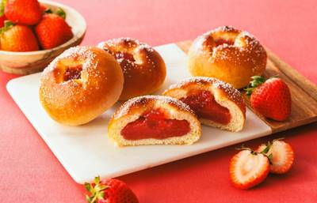
11/25 10:00 ❓ 不明株式会社木村屋總本店のプレスリリース 株式会社木村屋總本店（本社所在地：東京都江東区、代表取締役社長：木村 光伯、以下：木村屋）
株式会社ほっかほっか亭総本部のプレスリリース ガツンと効いた“ダブルにんにく”でごはんが進む！「牛プルコギ弁当」「牛プルコギスペ
第一屋製パン株式会社のプレスリリース 第一屋製パン株式会社（本社：東京都小平市、代表取締役社長：細貝 正統、以下：第一パン）は、
株式会社物語コーポレーションのプレスリリース 全国で372店舗展開中の『焼肉きんぐ』は、2026年12月9日(水)から2027年
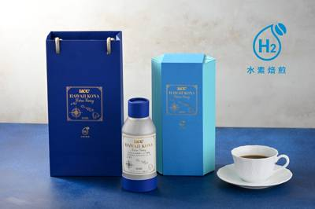
11/25 10:00 🚄 兵庫コーヒースタイルユーシーシー株式会社のプレスリリース ～2026年11月25日予約開始、12月11日より期間限定販売～ COFF
株式会社世界文化ホールディングスのプレスリリース 世界文化社は、人気の調理家電「レコルト・自動調理ポット」のレシピ本『はじめての
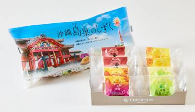
11/25 09:40 🚄 沖縄株式会社 エーデルワイスのプレスリリース 株式会社エーデルワイス沖縄は、首里城正殿復興記念商品として、沖縄 島果のしずく4種類（
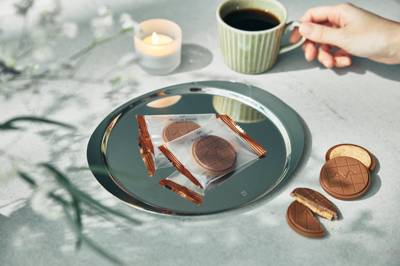
11/25 09:30 ❓ 不明株式会社 エーデルワイスのプレスリリース 「おとなのミルクチョコレート」がコンセプトの、オリジナルミルクチョコレート専門店｢Mu
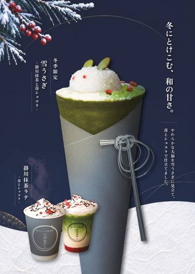
11/25 09:02 ❓ 不明ダイコク電機株式会社のプレスリリース ～東京浅草が本店の和クレープ専門店「浅草茶屋たばねのし」から、冬の季節限定商品のお知らせ～
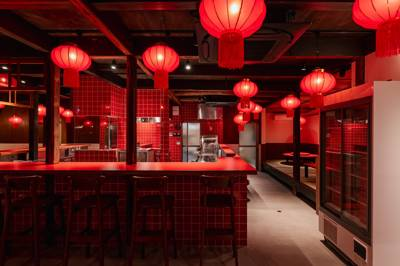
11/25 17:00 🚄 京都株式会社BURPのプレスリリース 2026年11月26日、京都駅前に54席の新店舗がオープン。約20種類の新メニューに加え、動物
カッパ・クリエイト株式会社のプレスリリース 店内切り付けの、旨コと甘みあふれる「大切りサーモン」と 旬の「国産 活〆寒ぶり」をお
日本ホテル株式会社のプレスリリース ～芳醇なブラウンマッシュルームのクリームパスタや牛サーロイン、30種以上の美酒を心ゆくまで～
株式会社KICHIRIのプレスリリース 〆はチーズたっぷりのサフランリゾットでさらに背徳！2027年2月28日（日）までの冬季限
株式会社ビリオンフーズのプレスリリース 高級寿司業態『五反田 鮨あさひ』の系列店が提供する本コース。すし処二ノ宮全店で江戸前寿司
ソラーレ ホテルズ アンド リゾーツ株式会社のプレスリリース あまおう苺のプレミアムケーキから中国料理シェフ仕込みのチキン＆オー
JA全農の産直通販JAタウンのプレスリリース ＪＡ全農が運営する産地直送通販サイト「ＪＡタウン」のショップ「正直やまぐち」では
全国農業協同組合連合会のプレスリリース ＪＡ全農が運営する産地直送通販サイト「ＪＡタウン」のショップ「正直やまぐち」では、山口
全国農業協同組合連合会のプレスリリース ＪＡ全農が運営する産地直送通販サイト「ＪＡタウン」のショップ「まるっと完食おおいた～美
みちのくコカ･コーラボトリング株式会社のプレスリリース 早期発見・早期治療を啓発し、乳がんから大切な命を守るための取り組み みち
JA全農の産直通販JAタウンのプレスリリース ＪＡ全農が運営する産地直送通販サイト「ＪＡタウン」のショップ、「ココ・カラ。和歌
全国農業協同組合連合会のプレスリリース ＪＡ全農が運営する産地直送通販サイト「ＪＡタウン」のショップ、「ココ・カラ。和歌山マル
株式会社かね貞のプレスリリース ～11月24日（火）よりかね貞Instagramにて開始～ 魚肉ねりものメーカーの株式会社かね貞
株式会社トラストリッジのプレスリリース 〜店頭購入型サンプリング「テンタメ」と連携。レシピ・動画コンテンツで、購入から「使い続け
株式会社アレフのプレスリリース 株式会社アレフ（本社:北海道札幌市、代表取締役社長:庄司 大）が展開するハンバーグレストラン「び
 11/25 12:53
🚄 青森
11/25 12:53
🚄 青森
株式会社コロワイドダイニングのプレスリリース 当日予約もOK！12月の日曜～木曜の予約利用が対象 コロワイドグループの株式会社
 11/25 12:18
❓ 不明
11/25 12:18
❓ 不明
株式会社コロワイドダイニングのプレスリリース 当日予約もOK！12月の日曜～木曜の予約利用が対象 コロワイドグループの株式会社
株式会社ドリームエクスチェンジ(本社：東京都千代田区)が運営する「スイーツ工房フォチェッタ」は、コカ・コーラ社が所有する自動販売
 11/25 11:18
🌐 全国
11/25 11:18
🌐 全国
株式会社コロワイドダイニングのプレスリリース 当日予約もOK！12月の日曜～木曜の予約利用が対象 コロワイドグループの株式会社
ロイヤルホールディングス株式会社のプレスリリース ～2026年12月8日（火）開始！簡単なアカウント連携のみで、毎日の食体験をも
株式会社吉野家ホールディングスのプレスリリース 株式会社吉野家（本社：東京都中央区、代表取締役社長：成瀨哲也）は、2026年11
株式会社浜友Ｅ.Ｆ.のプレスリリース 遠州山中酒造公式ECサイトにて、大の里関の九州場所優勝を記念したプレゼントキャンペーンを開
青木フルーツ株式会社のプレスリリース ここでしか味わえない限定タルトやオリジナル保冷バッグなどの記念企画も 青木フルーツ株式会
JA全農の産直通販JAタウンのプレスリリース ＪＡ全農が運営する産地直送通販サイト「ＪＡタウン」のショップ「とさのさとアグリコ
ダイタン商事株式会社のプレスリリース ～味噌ラージャンと一味唐辛子の共演～ 202612_赤富士そば_富士そば 立ち食いそば・う
株式会社ホットランドホールディングスのプレスリリース 創業以来１番人気「たこ焼（ソース）」が、店内でもテイクアウトでも “税込5
株式会社Sweet Pixelsのプレスリリース 株式会社Sweet Pixels(本社:東京都港区、代表取締役社長:柳井雄介)
株式会社モンシェールのプレスリリース 「堂島ロール」とサンリオキャラクターズがコラボレーション。11月28日（土）にプレオープン
大正製薬株式会社のプレスリリース 腸活経験者の約5人に1人が「肌の調子が良くなった」と回答脳・腸・肌のつながりを実感する人が多数
一般社団法人これからの時代の飲食店マネジメント協会のプレスリリース 出店・マーケティング・ルール設計・財務諸表まで。数字で店を動
森永製菓株式会社のプレスリリース 森永製菓株式会社（東京都港区芝浦、代表取締役社長 COO・森 信也）は、忙しい現代人の健康維持
森永製菓株式会社のプレスリリース 森永製菓株式会社（東京都港区芝浦、代表取締役社長 COO・森 信也）は、この度、一般社団法人w
株式会社そごう・西武のプレスリリース 西武池袋本店地下1階「デパチカ スイーツ＆ギフト」では、2026年12月25日（金）まで、
レミー コアントロー ジャパン 株式会社のプレスリリース “量よりも質”という観念を軸に、サステナブルな栽培法を取り入れ、ワイン
YH Research株式会社のプレスリリース 歯科用ナノ酸化ジルコニア世界総市場規模歯科用ナノ酸化ジルコニアとは、酸化ジルコニ
京セラ株式会社のプレスリリース 京セラ株式会社（以下、京セラ）は、2026年12月2日（水）から4日（金）まで、東京都江東区の有
みのりみのるプロジェクトのプレスリリース 艶さし「佐賀牛」と粒立ちの良さが際立つ「さがびより」をお届け！ ＪＡ全農は、東京都・
株式会社菜花の里のプレスリリース 株式会社菜花の里(本社：千葉県成田市、代表取締役：河越 敬仁)は、2026年11月27日(金)
東急ホテルズ＆リゾーツ株式会社のプレスリリース 全国30ホテルから選抜された精鋭6名が磨き上げた技術とホスピタリティを披露、栄え
株式会社JR東日本クロスステーションのプレスリリース 株式会社JR東日本クロスステーション フーズカンパニー（所在地:東京都渋
株式会社ポトマックのプレスリリース 中通りのイルミネーションと一緒に期間限定のコースをこの機会に是非お楽しみください ― 魚介と
味の素株式会社のプレスリリース 「食べる相手の喜び」が選択肢の中で最多、「写真映え」の約2.5倍に ～10年以上、料理に込めた学
株式会社トリドールホールディングスのプレスリリース 丸亀製麺、ハピネススコア10Pt向上で年間約1.14億円の売上貢献と分析
電解質ドリンク「Precision Fuel & Hydration（プレシジョンフューエル&ハイドレーション）
株式会社飯田商店のプレスリリース 全国1,700以上の自治体・約100万点の返礼品の中から総合第14位 株式会社 飯田商店（本社
株式会社エブリーのプレスリリース 2027年は、高タンパクレシピ・食べるスクイーズ・じゃがいも主役レシピに注目 株式会社エブリー
株式会社エルティーアールのプレスリリース デモゴルゴンの展示やフォトスポットも展開！みんなで本作品の10周年をお祝いしましょう！
株式会社こじまのプレスリリース 羽曳野本店のコースが「いい肉の日」に復活。厚切りタン、上カルビ、赤身ハラミも食べ放題。11月26
株式会社富澤商店のプレスリリース ～オープン記念のお楽しみ袋やお得な限定セットを販売～ 日本最大級の製菓・製パン材料、器具専門
株式会社ステディスタディのプレスリリース 〜サステナブルな食品や規格外品などを活用したランチを、表参道の『uni』にて期間限定で
株式会社東武ホテルマネジメントのプレスリリース モダンにデザインされた空間で過ごす、クリスマスのひととき。 【ディナー】雪に見立
株式会社グレープストーンのプレスリリース 株式会社鎌倉座(本社：神奈川県鎌倉市)が展開する｢鎌倉五郎本店」 は、2026年12月
株式会社WDI JAPANのプレスリリース 大切な人と迎える特別な聖夜、五感のすべてで味わう全4品のコース 2026年11月25
株式会社オヴァールリエゾンのプレスリリース まるごと食べられるツリー型ショコラと、きらめくコフレのご案内 カカオ豆から本格的なチ
株式会社 資生堂パーラーのプレスリリース 公式サイト：https://parlour.shiseido.co.jp/ 「資生堂パ
株式会社301のプレスリリース 大橋会館・CABO等を手掛ける301が、ブランディングとローカルガイド『Someone'
貝印株式会社のプレスリリース ～本を通じて東京を再発見する観光案内所「Tourist （Information ＋ Book)
株式会社WDI JAPANのプレスリリース 大切な人と迎える特別な聖夜、五感のすべてで味わう全5品のコース 2026年11月25
ハイアット セントリック 銀座 東京のプレスリリース ～クリエイティブユニット「S.E.M.」が手がける、遊び心あふれるクリスマ
株式会社Globridgeのプレスリリース 〆は注文ごとに炊き上げる名物「鮭といくらの土鍋ごはん」2時間飲み放題付きコース8,0
もつ焼 碁ゑんのプレスリリース 元フレンチシェフが手がける10周年記念コース。忘年会に向け、開店以来初となる宴会コース2種も登場
株式会社beagleのプレスリリース 旨味極まる「熟成黒さつま鶏」× 最高峰「紀州備長炭」。セラーに眠る数百本のワインと響き合う
Trailhead Global Holdings株式会社のプレスリリース 伝統フレンチ「ロッシーニ」が贅沢なバーガーに大変身！
ユナイテッド・スーパーマーケット・ホールディングス株式会社のプレスリリース 株式会社いなげや(本社：東京都立川市、代表取締役社
株式会社ファイブグループのプレスリリース 熱々の煮込みや小さな鍋から、〆の焼きそば、デザートまで。寒い夜に食べたくなる“酒場のう
ガムナミエス合同会社のプレスリリース 薬草に頼りすぎず、国産・練馬産野菜など身近な食材を活用。ミネストローネ仕立てのスープパスタ
株式会社 With Pet Familyのプレスリリース 牛たん・牛ロース・牛レバー・チキンの4種類が食べ放題！1頭1,848円
株式会社ミャウルミナのプレスリリース にんじんを切った後の色移り、肉や魚を扱った後に気になるにおい。 毎日使う「まな板」の悩みは
株式会社ファイブグループのプレスリリース 一杯目のおつまみから、おつまみ握り寿司、食後のデザートまで。寒い夜をもっと楽しむ、とと
Oishii Farm Corporationのプレスリリース サステナブルな農業と圧倒的な「おいしい」の実現を目指し、植物工場
 11/26 08:50
🌐 全国
11/26 08:50
🌐 全国
有限会社ともえ産業情報のプレスリリース つぶあんたい焼き1匹の平均価格は263.5円、前回比62.1円上昇。人口10万人あたりの
株式会社紀ノ國屋のプレスリリース お歳暮や冬の贈りものにおすすめの人気商品をランキング形式でご紹介。紀ノ国屋こだわりの品から、全
株式会社ハトヤ瑞鳳閣のプレスリリース ～令和8年11月14日（土）より開催。京都の秋を彩る名勝のほとりで、和洋の甘味と特別なティ
sweets muséeのプレスリリース ～桐生第一高校×地元名店モンシェリー×スイーツミュゼによる地域・教育共創プロジェクト～
みのりみのるプロジェクトのプレスリリース ＪＡ全農は、直営飲食店舗「みのる食堂金沢フォーラス店」で１１月２８日（土）～１２月１３
株式会社パソナグループのプレスリリース 株式会社パソナふるさとインキュベーションが運営するハローキティのショーと食事が楽しめるシ
KOZOホールディングス株式会社のプレスリリース KOZOホールディングス株式会社の子会社であるアスラポート株式会社（本社：東京
米屋株式会社のプレスリリース 沖縄でしか出会えない特別な味わい 和洋の素材が織りなす新しいおいしさをぜひ！ 米屋株式会社は、沖縄
KOZOホールディングス株式会社のプレスリリース KOZOホールディングス株式会社の子会社であるアスラポート株式会社（本社：東京
特定非営利活動法人GAIA.KAWASAKIのプレスリリース ～ 飲食企業だからこそできる地域貢献。良質な食材を活かし、子どもた
株式会社movのプレスリリース ～12月2日-12月4日に開催～ 店舗向け集客一元化プラットフォーム「口コミコム」を運営する株式
キリンホールディングス株式会社のプレスリリース キリンホールディングス株式会社（社長 COO 南方健志）は、日本経済新聞社の20
株式会社アドバンスフォートのプレスリリース 予約から注文 厨房 配膳 現金会計まで ライトプラン月額9,800円から 株式会社ア
ウッドデザインパーク株式会社のプレスリリース 30分無料延長クーポンで、飲み放題が120分から150分に。寒い日も暖かい屋内で心
株式会社ぐるなびのプレスリリース ～都内厳選居酒屋4店舗にて、スマートな飲酒体験と限定セットメニューを展開～ 株式会社ぐるなび（
KOZOホールディングス株式会社のプレスリリース KOZOホールディングス株式会社の子会社であるアスラポート株式会社（本社：東京
株式会社エー・ピーホールディングスのプレスリリース ＜塚田農場＞ 2026年11月25日(水)より塚田農場各店にて開始 株式会社
株式会社ラショナル・ジャパンのプレスリリース 記念モデルの引き渡し式に立ち会ったSodexoおよびRATIONALの関係者 金色
株式会社ニチレイのプレスリリース 株式会社ニチレイ（本社：東京都中央区、代表取締役社長CEO：嶋本和訓）は、2026年11月25
カッパ・クリエイト株式会社のプレスリリース かっぱ寿司全店で２０２６年１１月２６日より販売 コロワイドグループのかっぱ寿司（カ
富士商グループホールディングス株式会社のプレスリリース ～大切な人と過ごす、年に一度のご褒美ディナー。カフェでは日々の頑張りに華
株式会社ピー・エス・コープのプレスリリース 福岡県産の柿「秋王」や長野県大月農園のシャインマスカットを使用した、パティシエこだわ
学校法人 名城大学のプレスリリース ～レスベラトロールの水への溶解度が1,000倍以上に！ 食品・化粧品向けの新素材開発に期待～
株式会社やおきんのプレスリリース こどもから大人までみんなでワイワイ楽しめる！27年3月28日に第一回が開催。今後も春休みと夏休
株式会社フォンスのプレスリリース https://b-sawamura.com/ ベーカリー＆レストラン 沢村では2026年11
株式会社ワンダーテーブルのプレスリリース ピーター・ルーガー、ジャン・ジョルジュなど都内人気レストランの食事券・ペアチケットや、
日本ホテル株式会社のプレスリリース きらめく夜景とニューヨークスタイルの洗練されたイタリアンで祝う特別な聖夜／12月24日（木）
全国農業協同組合中央会のプレスリリース 本会が協賛する、大学生が日本の農業や食、地域、JA等に関する研究成果を競う研究発表大会「
株式会社近鉄・都ホテルズのプレスリリース ―1月3連休 特別企画― 都シティ 大阪本町（所在地：大阪市中央区北久宝寺町1-8-7
株式会社東京玉子本舗のプレスリリース 株式会社東京玉子本舗「TRIPLE DECKER LONDON」(代表取締役社長：金野崇、
株式会社エムエスディのプレスリリース もち麦・押し麦による摂取は20代が44.7％で年代別最多 BARLEYmax（バーリーマッ
株式会社プラコレのプレスリリース 「PLACOLE & DRESSY」ブランドを展開する、冒険社プラコレ(本社：神奈川県
オイシックス株式会社のプレスリリース 〜下ごしらえ不要で安全でおいしいおかずを作ることができる点が高い評価を獲得〜 食品のサブス
カネリョウ海藻株式会社のプレスリリース ～海藻の3色で異なる腸活効果や、「めかぶファースト」の実践法を提案～ 海藻の総合メーカー
株式会社ゼンショーホールディングスのプレスリリース 株式会社バーガー・ワン（代表取締役社長：木村 大志 本社：東京都港区）が展開
株式会社はくばくのプレスリリース ～大麦雑穀市場拡大と産地多様化を見据え、食の安全を牽引～ 『主食改革』を提唱する穀物のリーデ
株式会社栄通のプレスリリース 「プリロール」を運営する株式会社栄通（本社：東京都八王子市）は、『にゃんこ大戦争』クリスマス限定デ
株式会社Globridgeのプレスリリース “ふく”を呼ぶ冬のごちそう。てっちり・てっさ×高級寿司50品食べ放題の限定コースをお
株式会社 Mr. CHEESECAKEのプレスリリース ポップアップストア限定商品の「Mr. CHEESECAKE Strawb
株式会社マッシュホールディングスのプレスリリース ジェラートで仕立てたベアのクレープ2種の限定メニュー！ミルクといちご、チョコレ
株式会社物語コーポレーションのプレスリリース 株式会社物語コーポレーション(本社:愛知県豊橋市/代表取締役社長:加藤 央之)が東
株式会社栄通のプレスリリース 「プリロール」を運営する株式会社栄通（本社：東京都八王子市）は、『ラブライブシリーズ』クリスマス限
株式会社CCHのプレスリリース CCHが飲食店向け集客支援サービスを始動。DAZNの法人契約を導入した店舗の「スポーツを観るなら
東洋ライス株式会社のプレスリリース 左から、有限会社土屋米穀店 代表取締役 土屋 一、御前崎市長 下村 勝、東洋ライス株式会社
株式会社スタジアムのプレスリリース 萌え断サンドイッチの作り方を学びながら、自分時間も大切にするオンラインサロン 株式会社スタジ
有限会社コンテンポラリープランニングセンターのプレスリリース ふわふわ・もっちり、ちょっぴりセイボリーなパンケーキ生地に旬の味わ
株式会社N・Iのプレスリリース ～馬肉サイコロステーキも、朝引き鶏のバラ焼きも通常の3倍に！お得に楽しめる4日間～ 株式会社N・
株式会社一ノ蔵のプレスリリース 10名の作家による合同作品展として宮城県大崎市の松山酒ミュージアムで開催 11/14(土)～12
明海グループ株式会社のプレスリリース おひとり様・カップル向けのプチサイズからファミリー向けまで。11月28日（土）より店頭での
東急ホテルズ＆リゾーツ株式会社のプレスリリース ～「Brand Strawberry Symphony」をテーマに～ ユニバー
株式会社フォーシーズのプレスリリース 期間限定：2026年11月20日(金)より 株式会社フォーシーズ（東京都港区南青山 代表
角上魚類ホールディングス株式会社のプレスリリース 三陸の海の幸を盛り込んだフェア限定の寿司や刺身、惣菜もご用意します！ 角上魚類
モロゾフ株式会社のプレスリリース 洋菓子メーカー、モロゾフ株式会社（神戸市東灘区）より、キツネがアンバサダー、「レモン」がテーマ
株式会社ベストホスピタリティーネットワークのプレスリリース 神戸牛と松阪牛の食べ比べと、旬の海鮮を贅沢に味わえるランチ＆ディナー
株式会社すかいらーくホールディングスのプレスリリース 株式会社すかいらーくレストランツ（本社･東京都武蔵野市、代表取締役社長
東急ホテルズ＆リゾーツ株式会社のプレスリリース 提供期間：2026年12月2日（水）～2027年2月28日（日） アフタヌーンテ
株式会社ウェルカムのプレスリリース クリスマスや年末年始の買い出しから、手土産やごちそうの持ち寄りまで。ホリデーシーズンのおいし
日本ホテル株式会社のプレスリリース ホテルメトロポリタン（豊島区西池袋1-6-1 総支配人 桃谷健志）四季彩茶寮「旬香」では、昨
株式会社アトムのプレスリリース コロワイドグループの株式会社アトム（本社：神奈川県横浜市 代表取締役社長：植田剛史）が展開する回
株式会社丸亀製麺のプレスリリース 肉厚な雪国まいたけの旨みが詰まった、冬限定「まいたけ天のうどん弁当」も帰ってきた！ 株式会社
株式会社ＫＹコーポレーションのプレスリリース サンドウィッチマンのCMでおなじみの【焼肉冷麺やまなか家】では、2026年12月1
株式会社グレープストーンのプレスリリース 「ねんりん家」「東京ばな奈ワールド」などを運営する株式会社グレープストーン(本社：東京
株式会社染野屋のプレスリリース 12月22日から染野屋グループの移動販売で関東・東海・北陸に年末限定販売へ 富山県魚津市の有限会
UBAKUのプレスリリース 北海道美瑛・東川町の地域プロデュースチームUBAKUが、農家から直接受け取った野菜を送料込みで産地直
株式会社PAANのプレスリリース 料理名・価格の入力から、15言語への翻訳、QRの案内カードのお届けまで、弊社がすべて行います。
株式会社すかいらーくホールディングスのプレスリリース 株式会社すかいらーくレストランツ（本社･東京都武蔵野市、代表取締役社長
株式会社アルプロンのプレスリリース 選考を経て、2027年1月から約6か月の実践プログラムへ アスリートを支えるプロテインブラン
株式会社CULTAのプレスリリース シーアール物流株式会社（本社：岡山県岡山市、代表取締役社長：大久保 泰造、以下「シーアール物
株式会社チャンピオンカレーのプレスリリース レトルト加工をしない「生カレー」の魅力とは？代表取締役社長・中村洋介が語る、名称変更
カルチュア・コンビニエンス・クラブ株式会社のプレスリリース 蔦屋書店限定のステーショナリーや、季節限定・定番のチョコレート商品も
 11/25 10:00
❓ 不明
11/25 10:00
❓ 不明
ストラク株式会社のプレスリリース 出店をお待ちのオーナー様200名以上に向けて、催事会場となるスペースのご提供者を募集します 株
株式会社治一郎のプレスリリース 人気の焼き菓子3種類を詰め合わせた、冬の特別なアソート バウムクーヘンブランドを展開する株式会社
株式会社甲羅のプレスリリース 黒毛和牛と秘伝のフルーツタレにこだわる焼肉店「大東園」で、厳選した国産牛レバーの魅力を味わう期間限
でらオンブリゴジャパンのプレスリリース ～商品企画から完成まで約8ヶ月をかけて、素材本来の魅力を大切にする「安心・安全」にこだわ
株式会社梅の花グループのプレスリリース 梅の花グループの株式会社テラケン（本社：東京都千代田区、代表取締役社長：野田安秀）が運営
株式会社京瀧のプレスリリース 冬から春へ、いちごの季節をたっぷりと。絶景とともに楽しむスイーツやドリンクが登場 12月1日～期間
西和賀町のプレスリリース 第7回岩手県はちみつ品評会で高評価。 「あかしあ」も日本養蜂協会会長賞を受賞。雪国・西和賀の自然が育む
株式会社お亀堂のプレスリリース 北海道産小豆を独自の蜜でふっくらと炊き上げ、粒の食感と風味を引き出しました。1袋380g（約2人
株式会社タカノフルーツパーラーのプレスリリース 株式会社タカノフルーツパーラー（代表取締役社長 髙野吉太郎 本社東京都新宿区）は
株式会社じじやコーポレーションのプレスリリース 〜「県南の皆さんに、おいしいねと笑ってほしい」。たくさんの”笑顔”が集まる場所を
SRSホールディングス株式会社のプレスリリース 冬の味覚、握りで堪能！ 株式会社アミノ(本社：宮城県仙台市、代表取締役執行役員社
とくさと-ふるさと納税還元率ランキング-のプレスリリース ふるさと納税還元率比較サイト【とくさと】 ふるさと納税返礼品の還元率を
スペースシードホールディングス株式会社のプレスリリース 研究室で生まれた知見から開発したスープの試飲と、脂質ナノ粒子「バイセル」
森永製菓株式会社のプレスリリース 森永製菓株式会社（東京都港区芝浦、代表取締役社長 COO：森 信也）は、当社鶴見サイト内（横浜
株式会社ポトマックのプレスリリース バッグ：エスプレッソ © 2026 Peanuts Worldwide LLC 毎年、予約開
モエ ヘネシー ジャパン株式会社のプレスリリース アードベッグ初のアモンティリャードシェリー樽100％熟成ウイスキーをヒコロヒー
株式会社清川屋のプレスリリース 公式通販サイト限定で年末年始にぴったりの「清川屋のおもてなし菓子重」新発売。年末年始には昨年も人
ビーンズ・コネクティッド株式会社のプレスリリース ヤンゴンの子ども養育施設「Dream Train」リニューアルプロジェクトの建
ビーンズ・コネクティッド株式会社のプレスリリース 精製方法による香りと味わいの違いをお楽しみください。 ユワンガン月のコーヒーシ
株式会社瀬戸内のプレスリリース アクリルキーホルダー(EC限定50個)のノベルティ付き。SETOUCHI BEER ONLINE
株式会社 明治のプレスリリース 株式会社 明治（代表取締役社長：八尾 文二郎）は、一般社団法人日本マザーズ協会（会長：森松 和
株式会社 明治のプレスリリース 調乳不要の液体ミルクと、哺乳瓶への移し替えが不要な専用アタッチメントが選出 株式会社 明治（代表
株式会社Yachtのプレスリリース ラーメン王国・福島にラーメンYouTuber・SUSURUが全国から厳選した全国の名店１０店
株式会社ドウシシャのプレスリリース 東京高輪バタリスタ 「バターバー」 生活関連用品の企画・開発・販売を行う株式会社ドウシシャ
パルミジャーノ・レッジャーノ・チーズ協会のプレスリリース パルミジャーノ・レッジャーノと女性料理人のコラボイベント「PARMIG
KURAND株式会社のプレスリリース KURAND株式会社（本社：東京都足立区、代表取締役：荻原恭朗）は、弊社が運営するオンライ
ダイコク電機株式会社のプレスリリース 昼は陽光で七色に、夕暮れからは幻想的に。期間限定フォトスポットや「ヴェネチア仮面祭」の無料
三菱地所ホテルズ＆リゾーツ株式会社のプレスリリース お正月の伝統を洋の技巧で華やかに。新年を祝う晴れやかなひとときを。 ザ ロ
株式会社芝パークホテルのプレスリリース ～アーティストとの共創で、日本の美意識を世界へ～ 「まるで泊まれる美術館」として、アー
株式会社エスエルディーのプレスリリース 様々なスペースやイベントの企画・運営を手がける株式会社エスエルディー（本店：東京都港区、
アイコニア・ホスピタリティ株式会社のプレスリリース アートホテル日暮里 ラングウッド（所在地：東京都荒川区、総支配人：塩田祥之
Ｇｉｎｇｅｒ Ｌａｂ株式会社のプレスリリース ピッチ登壇と社会貢献型防災備蓄食「KIBOU CURRY」の展示を通じ、企業・自治
株式会社にんべんのプレスリリース 株式会社にんべん(東京都中央区、代表取締役社長 髙津伊兵衛)は、日本橋エリアで2026年11月
Anique株式会社のプレスリリース Anique株式会社（本社：東京都千代田区、代表取締役：笠井高秀）は、漫画『ファインダーシ
特定非営利活動法人ピープルデザイン研究所のプレスリリース 渋谷ヒカリエ8F 8/COURTにて開催される「超福祉の学校@SHIB
株式会社武蔵野銀行のプレスリリース ～都道府県会館（東京都千代田区）で埼玉と千葉、ふたつの魅力をめぐるイベント～ 武蔵野銀行（頭
Anique株式会社のプレスリリース 【カラフルチェック】をテーマにゆめ、ローラ、小春、ひめ、ゆず、リリィの描き下ろしイラストが
Plantful Journeyのプレスリリース 2日間で約5,400名が来場。協賛企業は前年比約2.4倍の22社に拡大。商品購
株式会社CASA CABANのプレスリリース 「WEAVING CHRISTMAS」の装い、2つのダイニングでの限定ディナーと宿
株式会社L.B.Marketのプレスリリース 〜ライブ・観劇・ショッピングを楽しむ人々へ。"サクッ、もちっ。"
King's Hawaiian Holding Company, Inc.のプレスリリース 〜クリスマスのホームパーテ
日本カレーパン協会のプレスリリース 日本カレーパン協会・日本唐揚協会、公式グッズストアを同時オープン 一般社団法人日本カレーパン
株式会社東天紅のプレスリリース ◆昨年ご好評をいただいた少人数向けのおせちミールキットを、今年は重箱付きでご提案 ◆フカヒレ姿煮
株式会社イーストンのプレスリリース 人気No.1カルボナーラは北海道産4種チーズで濃厚に。カマンベールと黒トリュフのピッツァ、熱
株式会社ミスズライフのプレスリリース 11月28日（土）、ぶなクイーンのお吸い物の試食＆100名様限定のぶなしめじのつかみ取りを
三鷹駅前たなか糖尿病・内科クリニックのプレスリリース いよいよ2026年も残りわずか。12月に向けて忘年会やクリスマス、そしてお
合同会社ロチャのプレスリリース 京都・木屋町から新たな韓国食文化を。韓国・ソウルで人気の冷麺＆カルビが日本初上陸 「冷麺toカル
株式会社パソナグループのプレスリリース ハローキティのショーと食事が楽しめるシアターレストラン「HELLO KITTY SHOW
株式会社神戸ポートピアホテルのプレスリリース 『コントワール リュバン』オープン2周年記念イベントを1月15日～17日の3日間限
あわら市のプレスリリース あわら市学校給食センターは、2026年11月20日（金）、「学校給食レストラン」を開催しました。申し込
地域活性・復興支援プロジェクト「かき小屋実行委員会」のプレスリリース 大好評につき同場所で3回目の開催！東北復興支援価格の殻付き
UKホテルマネジメント合同会社のプレスリリース 魔法をテーマにしたフード＆ドリンクと、マジシャンが登場！さらにホリデーシーズンを
九州旅客鉄道株式会社のプレスリリース 地域のみなさまの暮らしを支える身近で便利な店舗へ この度、JR九州リテール株式会社は202
voco大阪セントラルのプレスリリース 在大阪・神戸米国総領事館主催、食雑誌「あまから手帖」企画・運営のイベントに初参加 voc
ハイアット リージェンシー 京都のプレスリリース フレッシュな苺も、苺スイーツも食べ放題。ローストビーフやちらし寿司など、セイボ
イオンモール株式会社のプレスリリース ～身近なイオンモールで、特別なクリスマス体験を～ 「イオンモールのクリスマスマーケット」
株式会社阪急阪神百貨店のプレスリリース 「DAICHI MIURA」とのコラボ商品や紗栄子とのフォトセッションも！「Social
株式会社JR西日本ホテルズのプレスリリース 2026年12月1日（火）～2027年2月28日（日）ディッシュパレードにて開催
株式会社ビオ・マーケットのプレスリリース 100％有機野菜の会員制宅配事業「ビオ・マルシェの宅配」を展開する株式会社ビオ・マーケ
株式会社TAKホスピタリティ京都のプレスリリース ～2027年1月30日（土）、31日（日）、2月6日（土）、7（日）開催～ パ
宮崎市役所のプレスリリース 12月5日・6日、大淀川河川敷特設会場で「大淀川リバーサイドフェス」を初開催！音楽とシンクロする1,
アイランド株式会社のプレスリリース 約3万人の「フーディスト®（料理インフルエンサーや料理クリエイター）」が参加する、日本最大級
学校法人 名城大学のプレスリリース 「おいしい紅茶日本一のまち」を掲げる尾張旭市からの課題の一環 経営学部の澤田慎治准教授のゼミ
麗澤中学・高等学校のプレスリリース 麗澤中学・高等学校(千葉県柏市/校長:櫻井讓)では、中学生・高校生を対象とした全員給食制を
道の駅常総のプレスリリース 105馬力の巨大トラクターが登場！お芋を買ってお芋が当たる運試しや 景品がもらえる玉入れなど、食べて
日欧商事株式会社のプレスリリース ～ 来春イタリア・トリノにて開催する世界大会の日本代表に決定～ 日欧商事株式会社(本社：東京都
伊東市役所のプレスリリース #INUKOGEN ──ペットと過ごせる観光地・伊豆高原に、パン屋・キッチンカー・わんこグッズが大集
三井農林株式会社のプレスリリース ～12月1日（火）より会員先行予約開始～ 日東紅茶ブランドを展開する、三井農林株式会社（所在地
カルチュア・コンビニエンス・クラブ株式会社のプレスリリース 『くるみ割り人形』の主人公「クララ」の家にある3つの部屋をテーマに、
株式会社ニジゲンノモリのプレスリリース それぞれの個性を表現した2種類の限定ドリンク 12月3日（木）より販売開始 ▲わたぼうの
 11/25 11:30
❓ 不明
11/25 11:30
❓ 不明
ValueAct Capital Management, L.P.のプレスリリース 宝ホールディングスは強いブランドを有する一方
ワンファイブホテルズ株式会社のプレスリリース soel の香りを料理やカクテルとともに楽しむ一日。オリジナルフレグランスづくりの
プレミアムウォーター株式会社のプレスリリース ～妊娠中のママや赤ちゃんにも安心の非加熱天然水～ 良質な水を育む日本有数の水源地か
韮崎市のプレスリリース ホットワイン・おでんなどのあったかグルメに、マシュマロ焼き体験！ガラポン抽選会やダンス＆音楽ステージも。
株式会社DREAMERSのプレスリリース 駅でコーヒーを飲む。知らなかったお店を見つける。誰かと出会い、新しいことが始まる。 う
株式会社ウインズジャパンホールディングスのプレスリリース 期間中はお子様ラーメン無料の他、先着200名様に限定スタンプカードをプ
パルシステム生活協同組合連合会のプレスリリース 「人と人のつながり」の大切さも呼びかけ 生活協同組合パルシステム茨城 栃木（本部
株式会社神戸屋のプレスリリース ～看板商品のクロワッサンや充実のドリンクを展開 毎日の通勤の合間にほんの少しの“心のゆとり”をお
LH 株式会社のプレスリリース 出張カキ小屋 牡蠣奉行（かきぶぎょう）：牡蠣小屋実行委員会 【協賛】サッポロビール株式会社 東北
株式会社TAISHIのプレスリリース 株式会社TAISHI(本社：北海道札幌市、代表取締役：菅野 剛)は「道の駅フェス in T
オイシックス株式会社のプレスリリース 〜子育て中のママ・パパに選ばれるサービスとして高い評価を獲得〜 ■マザーズセレクション大賞
株式会社阪急阪神百貨店のプレスリリース 今年の「#ICECREAM CHRISTMAS」では、バニラやいちごの王道をはじめ、個性
ほとめき通りメディアプロモーションのプレスリリース 目標2,000人へ上方修正 あわせてリポーター募集・地域連携・広域展開の3施
レミー コアントロー ジャパン 株式会社のプレスリリース ブルックラディのマスター・ブレンダーが開発した、シェリーカスク由来の豊
サンクトガーレン有限会社のプレスリリース 未利用ユズを活用したアップサイクルビール サンクトガーレン有限会社（神奈川県厚木市／代
株式会社サイドカーのプレスリリース Bar 石の華より石垣忍氏をゲストバーテンダーに迎え、12月2日（水）にはグランドオープン記
宝ホールディングス株式会社のプレスリリース りんごを皮まで丸ごと使用した、キュンとするような甘酸っぱさが特長のフルーツサワー！
亀田製菓株式会社（本社：新潟県新潟市、代表取締役社長：髙木 政紀）は、『32g ザクスティック ガーリックバター風味』（以下：『
奈良春日山酒造株式会社のプレスリリース 奈良・高畑の水と県産米を用いた新酒が登場。梅酒・柚子酒を含む新商品4種を酒蔵ショップなど
株式会社シュワンのプレスリリース 2026年11月24日(火)より、白練・墨・藍の3色の発売を開始いたします。 株式会社シュワン
株式会社信濃屋食品のプレスリリース 「Smith & Wollensky GINZA」にて12月8日(火)、ナパの伝説的
山形県酒造組合のプレスリリース 出羽桜酒造・鯉川酒造の蔵元と山形酒伝道師、奥田政行シェフが集結。蔵元の想いや日本酒の魅力を語り合
株式会社近鉄・都ホテルズのプレスリリース シェラトン都ホテル東京（所在地：東京都港区白金台1-1-50）は、2027年1月18日
 11/25 11:00
🗼 新橋
11/25 11:00
🗼 新橋
S.H.N株式会社のプレスリリース S.H.N株式会社（本社：東京都渋谷区、代表取締役：髙橋竜太）傘下のENRAVE株式会社は、
デュシットインターナショナルのプレスリリース 「ぬくもりと歓びに満ちたホリデーシーズン」をテーマに タイの大手ホテル・不動産開発
(一社)やまがたアルカディア観光局のプレスリリース 山形ワインと沿線食材を使った特製ランチBOXで、ちょっと早めのクリスマス旅
株式会社関電アメニックスのプレスリリース 大人のアフタヌーンティーセット付、パティシエール×元編集長が語るお酒に合うスイーツの魅
S.H.N株式会社のプレスリリース S.H.N株式会社（本社：東京都渋谷区、代表取締役：髙橋竜太）傘下のENRAVE株式会社は「
GOSSO株式会社のプレスリリース 2026年は肉で終わり、2027年は肉で始まる！年末年始は肉で祝おう！ GOSSO株式会社
株式会社まちづくり川越のプレスリリース 知る人ぞ知る、ふたつの味をひとつに。川越の酒と洋菓子の新しい出会いを、小江戸蔵里から。
SRSホールディングス株式会社のプレスリリース 生ビールやハイボールなど対象アルコールやドリンクバー、一品料理が半額に！さらにお
株式会社コロワイドダイニングのプレスリリース 当日予約もOK！12月の日曜～木曜の予約利用が対象 コロワイドグループの株式会社
株式会社SAKIGAKEホールディングスのプレスリリース ラーメン一杯ご注文でお得にアルコール飲料をお楽しみいただける「ハッピー
株式会社ミナモトのプレスリリース 蛇口レモンサワー飲み放題®60分605円の楽しさに加え、オープン期間は生ビール・ハイボール・レ
都農町のプレスリリース 尾鈴山の豊かな森と日向灘の潮風に育まれた宮崎県都農町は、世界が認める「都農ワイン」をはじめ、数々の栄誉に
株式会社Mostfunのプレスリリース 〜100年続く魚屋の目利きとイタリアンの技法で味わう、今夜いちばん旨い魚〜 「日本の従業
吉野家HDグループ/株式会社シェアレストランのプレスリリース お客様の雰囲気に合わせて店主が音楽をセレクト。小花の名物・魯肉飯も
株式会社N・Iのプレスリリース ～海から大地、そして酒蔵へ。牡蠣を育てる合田さん、こやま牧場、重家酒造を訪ねて出会った壱岐の味～
朝日酒造株式会社のプレスリリース 松籟蔵 社員「１級酒造技能士」1位同時表彰 朝日酒造株式会社（本社：新潟県長岡市、代表取締役社
株式会社モトックスのプレスリリース 1915年創業の酒類専門商社、株式会社モトックス（本社：大阪府東大阪市、代表取締役社長：寺西
音源: Original audio
Stir your coffee, and "Last Christmas" starts playing. Pull the spoon out and the music stops. It's a tiny holiday bit with a very satisfying sound-sync, and honestly? We're here for the festive chaos.
音源: Original audio
Bare face, lit candle, one dramatic blow. The second the flame goes out, we cut to a full glam look with makeup and hair done, synced to the audio. It's a glow-up with a little theater, and a great fit for beauty and lifestyle creators (and salons, too).
音源: Runaway (feat. Pusha T) – Kanye West
Nobody cares what you wear to work. Cut to: a montage of outfits and a very confident "I do." Creators open mid-task (working, running errands, you name it) with the "nobody cares what you wear to [insert niche]" text, then flip to their best looks. Perfect for fashion and lifestyle creators who live to get dressed up.